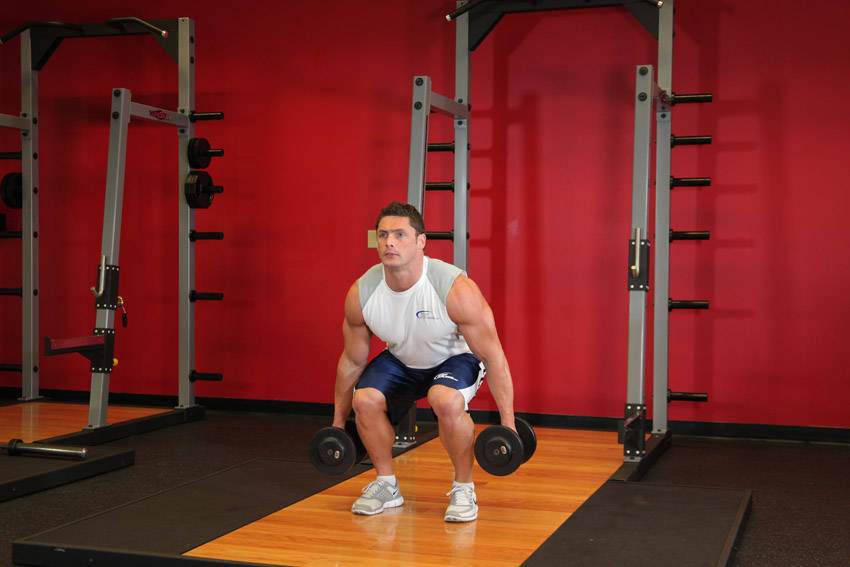

Pictured: Dumbbell Squat — shown here as a reference image for this exercise.

- Heels on a small wedge, a dumbbell held at your chest, chest tall. Sink as deep as your knees allow and feel the stretch at the bottom.
This exercise appears in Programmd training programs. Take the quiz to find one for your gym.
Find your program